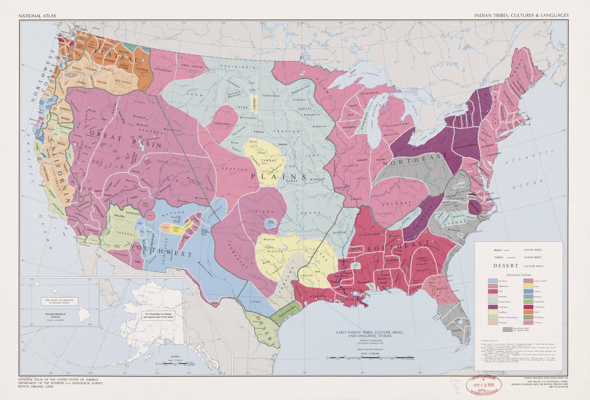

Names, languages and homelands on a 1967 map

In 1967 William C. Sturtevant of the Smithsonian Institution compiled this map for the National Atlas of the United States. It divides the lower 48 states among the peoples who lived there, colors them by the languages they spoke, and groups them into nine culture areas.
It is careful scholarship. It is also a record of who did the writing. Many of the names printed on it were given by someone else: a neighboring people's word, a trader's nickname, or a Spanish, French or English spelling of either.
The nations named in this study are still here, as governments and communities, and many of them govern under a name printed on this map.
So this study asks four questions of the map. Who wrote these names down? What do the nations call themselves? How do their languages connect across it? And where do the nations themselves say they came from?
The heaviest lines on the map divide the country into nine culture areas. Each one groups neighboring peoples who shared much of their way of life. The areas are the mapmaker's grouping, not the nations' own, but they are a good way into the map.
Each card lists a few of the peoples printed in that area. The map's label comes first. Where this study has the nation's own name, it follows the dot.
Many labels on the map came from outside. Some were a neighboring people's word for them. Some were a European nickname. Others are the people's own names, respelled by English or French writers. The table puts each label beside the name the nation uses for itself.
Most of these labels are still in use. The Cherokee Nation, the Choctaw Nation of Oklahoma and the Osage Nation all govern under names printed on this map. Of the 31 names below, only two, Papago and Iroquois, no longer appear in any nation's official name. So the question here is who chose each name.
The colors on the map are languages. Sturtevant sorted them into eighteen stocks: groups of languages that come from one parent language, or that linguists in 1967 thought did.
Language lines and culture lines do not match. The Plains, one culture area, holds at least four stocks. One stock, Algonkian, runs from the Blackfoot in Montana to the Delaware on the Atlantic, with two more peoples on the California coast. People moved, and their languages went with them.
Linguistics has moved since 1967. Some of the map's stocks still stand as families. Others were large proposed groupings that have not held up, and their members are now treated separately. The table under the tree gives each stock as printed and how linguists class it today.
Each nation in this widget has its own account of where it comes from. Linguists have a different kind of account: where a language family probably began, worked out by comparing its languages. The two are different kinds of claim, so they stay in separate lanes.
The first lane is a short paraphrase of what each nation has itself published, with a link to that page. Nothing in it comes from an outside retelling. Some stories are not ours to tell. Where a nation keeps a story for its own people, or tells it only in winter, the row says so and goes no further.
North Carolina runs through this map. Its nations carry an NC mark in Widgets 2 and 4.
The Tuscarora appear on the coastal plain, in the purple of the Iroquoian stock, near the Neuse River. After the Tuscarora War with the colonists, from 1711 to 1713, many moved north to the Haudenosaunee, and by about 1722 the Tuscarora were counted as the sixth nation of the Confederacy.
The Cherokee country on the map reaches into the mountains of western North Carolina, where the Eastern Band of Cherokee Indians governs today. The Eastern Band calls Kituwah, near Bryson City, the Cherokee Mother Town.
The Catawba are printed across the Carolina piedmont, near the river that carries their name. The Catawba Indian Nation is based in South Carolina and was federally recognized in 1993. In 2026 North Carolina recognized it as a state tribe.
The North Carolina Commission of Indian Affairs lists nine tribes in the state: the Catawba Nation, the Coharie Tribe, the Eastern Band of Cherokee, the Haliwa-Saponi Indian Tribe, the Lumbee Tribe of North Carolina, the Meherrin Indian Tribe, the Occaneechi Band of the Saponi Nation, the Sappony, and the Waccamaw Siouan Tribe. Three are also federally recognized: the Eastern Band, the Catawba Nation, and the Lumbee, who gained full federal recognition in 2025. Several of these names are on the 1967 map too: Meherrin, Saponi, and Occaneechi, which it prints as Ocaneechi.
The Commission also works with four urban Indian organizations: the Cumberland County Association for Indian People, the Guilford Native American Association, the Metrolina Native American Association, and the Triangle Native American Society.
The mapmakers warned about their own map. Its borders come from different centuries in different regions. And a sharp line misleads: territories overlapped, shifted, and were shared. The shapes in the widgets above are simplified tracings of that map, so they inherit both warnings.
Linguistics has moved since 1967. Several of the map's stocks were proposals that have not held up. The table in Widget 3 shows which.
These are living nations. Every nation in Widgets 2 and 4 is a government or community today. Where this study links to a nation's own page, that page is the better source.
One well-known source is left out on purpose. The Walam Olum, presented in the 1800s as an ancient Lenape migration record, was shown to be a 19th-century fabrication (Oestreicher, 1994). The Delaware Nation calls it fraudulent. It is not used here.
This page pairs with "Table of Nations", which reads Genesis 10, another map of peoples drawn by family, language and land.